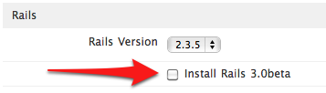

Rapid Application Deployment Engine
Alternative Engines
We allow you to deploy more than just Rails and Rack Applications. We have enabled Rails 3.0beta and PHP support to this Release Candidate.
Rails 3.0beta
In order to enable Rails 3.0beta support, you have to mark the Install Rails 3.0beta checkbox, on the Rails section when deploying the Rapid App ReadyStack to your Webby:

And when initializing your app, you need to use the --engine=rails3 option:
$ wn init webby3067 --engine=rails3
[Webbynode] Initializing application testr3 with dns testr3
Retrieving IP for Webby webby3067...
Initializing directory structure...
Initializing git and applying initial commit...
Adding webbynode as git remote...
[Webbynode] Application testr3 ready for Rapid Deployment
PHP
In order to deploy a PHP application, you need to use the --engine=php option, like below:
$ wn init webby3067 --engine=php
[Webbynode] Initializing application phpapp with dns phpapp
Retrieving IP for Webby webby3067...
Initializing directory structure...
Initializing git and applying initial commit...
Adding webbynode as git remote...
[Webbynode] Application phpapp ready for Rapid Deployment
When you are ready to deploy and issue the push command, PHP support will be installed on the fly. This is good because it avoids the possible PHP bloat if you’re not using it.
$ wn push [Webbynode] Pushing phpapp mkdir: created directory `phpapp' Counting objects: 11, done. Delta compression using up to 2 threads. Compressing objects: 100% (6/6), done. Writing objects: 100% (11/11), 1.12 KiB, done. Total 11 (delta 0), reused 0 (delta 0) Checked out master branch ---------------------------- Webbynode git deployment ---------------------------- Nginx+Passenger webserver detected... Setting up DNS... Deploying application phpapp as phpapp1.webbyapp.com... Adding PHP support to nginx... => Installing dependencies, this can take a few minutes... Reading package lists... Building dependency tree... Reading state information... The following extra packages will be installed: aspell aspell-en dictionaries-common gamin ghostscript gsfonts libaspell15 libc-client2007b libcupsimage2 libdjvulibre-text (... a lot of installation output ...) phpapp deployed successfully. Created http://phpapp.webbyapp.com/ To git@67.23.79.32:phpapp eeaa391..7d63ae9 master -> master [Webbynode] Finished pushing phpapp
And that’s it: your PHP app is ready to go.
Comments